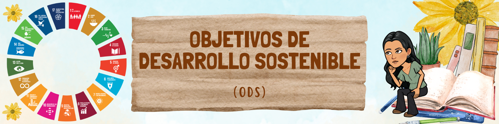
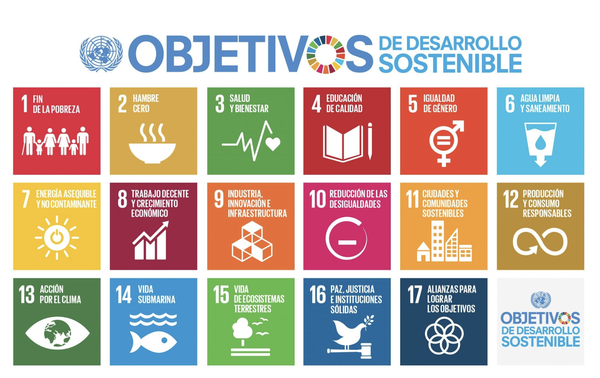
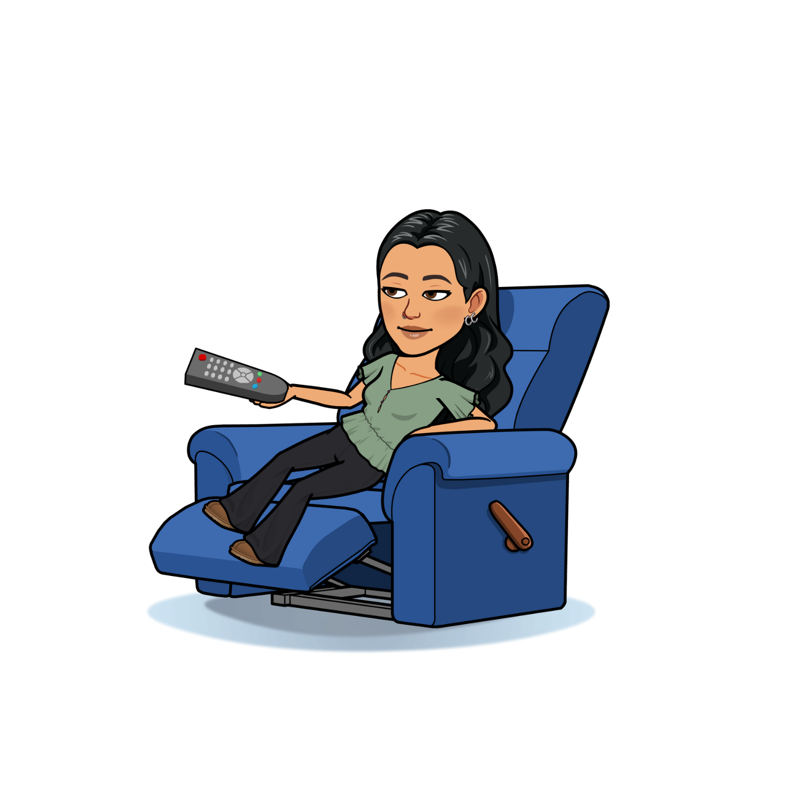

WELCOME EUROPE UNION
ODS
Hace apenas un siglo, el mundo era un lugar muy diferente donde prevalecía el crecimiento económico frente a todo lo demás. Tanto era así que las personas y la naturaleza quedaron en segundo plano, ya que no eran tan importantes como el dinero y el progreso. Queríamos avanzar rápidamente, pero acabamos destruyendo la vida tal y como la conocíamos. La industrialización, la contaminación y la quema de combustibles fósiles eran el motor de la actividad económica y las consecuencias no tardaron en manifestarse sobre el planeta; mayor emisión de gases de efecto invernadero, aumento progresivo de las temperaturas, derretimiento de los polos, etc. Estábamos transformando el mundo, pero no precisamente a mejor.
Los Objetivos de Desarrollo Sostenible (ODS) abordan los desafíos globales que enfrentamos, incluida la pobreza, la desigualdad, el cambio climático, la degradación ambiental, la paz y la justicia. En el año 2015, los Estados miembros de la ONU, junto con algunas ONGs y ciudadanos de todo el mundo, idearon la Agenda 2030 para el desarrollo sostenible, en la cual se establece un plan para alcanzar los objetivos en 15 años. La agenda 2030, que plantea los 17 Objetivos de Desarrollo Sostenible, es un nuevo horizonte con los retos más importantes para los seres humanos durante los próximos años: erradicar la pobreza, proteger el planeta y asegurar la prosperidad para todos.
Los 17 Objetivos de Desarrollo Sostenible son:

Para una mejor explicación de qué son los ODS visualiza este vídeo:
ODS 6. AGUA LIMPIA Y SANEAMIENTO
Este objetivo quiere asegurar que todas las personas tengan acceso a agua limpia y saneamiento de manera sostenible. Aunque se considera un derecho humano, millones de personas enfrentan dificultades para acceder a servicios básicos. Alrededor de 1800 de personas utilizan agua contaminada por restos fecales, mientras que 2400 millones carecen de servicios de saneamiento. La escasez de agua afecta a más del 40% de la población mundial, y más del 80% de las aguas residuales se vierten sin tratamiento, contaminando los ríos y los mares.

STEAM
Experimento 1
LA CONTAMINACIÓN DEL AGUA
Materiales
- Dibujos opcionales sobre casos de contaminación.
- Pintura vegetal (importante que sea vegetal para evitar contaminación adicional).
- Agua.
- Dos trozos de cuerda de longitud similar.
- 3 recipientes de agua (simulando ríos y lagos).
- Colorantes alimentarios (rojo y verde).
Procedimiento
1. Preparación del experimento:
- Crear dibujos sobre casos de contaminación para explicar el concepto.
- Usar pintura vegetal para añadir detalles a los dibujos.
2. Construcción de ecosistemas acuáticos:
- Colocar 3 recipientes en fila para simular ríos y lagos.
- Unir los recipientes con dos trozos de cuerda, formando lo que serían “ríos”.
3. Simulación de contaminación:
- En el primer vaso de agua, añadir colorante rojo para simular residuos dañinos.
- En el segundo vaso, agregar colorante verde, representando una situación donde la contaminación es causada por la acción humana.
- Observar cómo las “cuerdas” transportan los colorantes de un lugar a otro, simulando la propagación de contaminantes.
4. Impacto en el ecosistema marino:
- Observar cómo los colorantes llegan al “mar” y afectan el ecosistema.
5. Reflexión final:
- Observar cómo el color rojo llega a la pecera, alterando la composición original del agua.
- Reflexionar sobre la importancia de cuidar el agua y cómo nuestras acciones afectan los ecosistemas acuáticos.
Experimento 2
LA PURIFICACIÓN DEL AGUA
Materiales:
- Carbón activado.
- Arena.
- Piedras pequeñas.
- Piedras medianas.
- Piedras grandes.
- Dos botellas de litro y medio.
- Algodón.
- Tijeras.
- Pañuelo o gasa (un trozo de tela).
Procedimiento
1. Prepara las muestras de agua:
- Llena dos o tres vasos o recipientes con agua del río sin tratar.
- Etiqueta uno de esos recipientes como “Antes de la Purificación”.
2. Prepara el filtro:
- Antes de comenzar el experimento, es importante asegurarse de lavar bien todos los materiales.
- En primer lugar, cortamos la parte inferior de la botella más lisa.
- Luego, con la base cortada, introducimos el algodón en la botella y lo presionamos firmemente para que quede comprimido en el cuello de esta.
- A continuación, agregamos la cantidad necesaria de carbón activado para alcanzar de 7 a 10 cm de altura. Después, colocamos la misma cantidad (7 a 10 cm) de altura de arena y de cada una de las piedras de diferentes tamaños (desde las más pequeñas hasta las más grandes) acomodándolas para que queden bien ajustadas.
- Luego, colocamos el trozo de tela sobre las piedras más grandes.
- Finalmente, cortamos la parte superior de la otra botella, que servirá como receptáculo para el agua. Es crucial que el corte se realice en una parte de la botella donde el diámetro sea menor que el diámetro del filtro.
3. Filtra el agua:
- Sacamos la tapa del filtro y vertemos el agua sucia por la parte superior.
- Se deberá filtrar el agua de 2 a 3 veces, ya que la longitud de nuestro filtro es pequeña.
4. Recoge el agua:
- Etiqueta el recipiente del agua purificado como “Después de la Purificación”.
5. Observa y compara:
- Observa cómo el agua se vuelve más limpia en cada filtración.
- Observa el agua antes y después de pasar por el filtro.
- Utiliza los vasos para medir la cantidad de agua antes y después del proceso de purificación.
Obra publicada con Licencia Creative Commons Reconocimiento Compartir igual 4.0